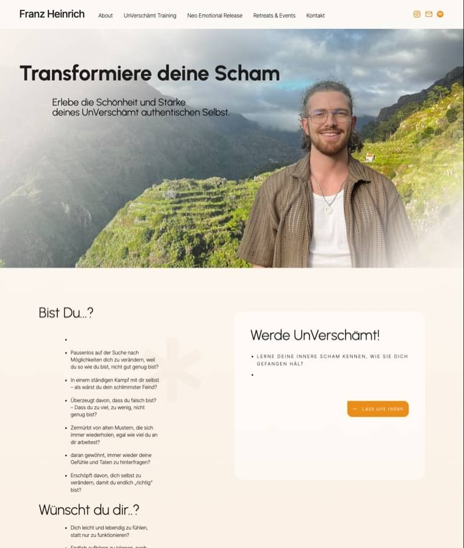
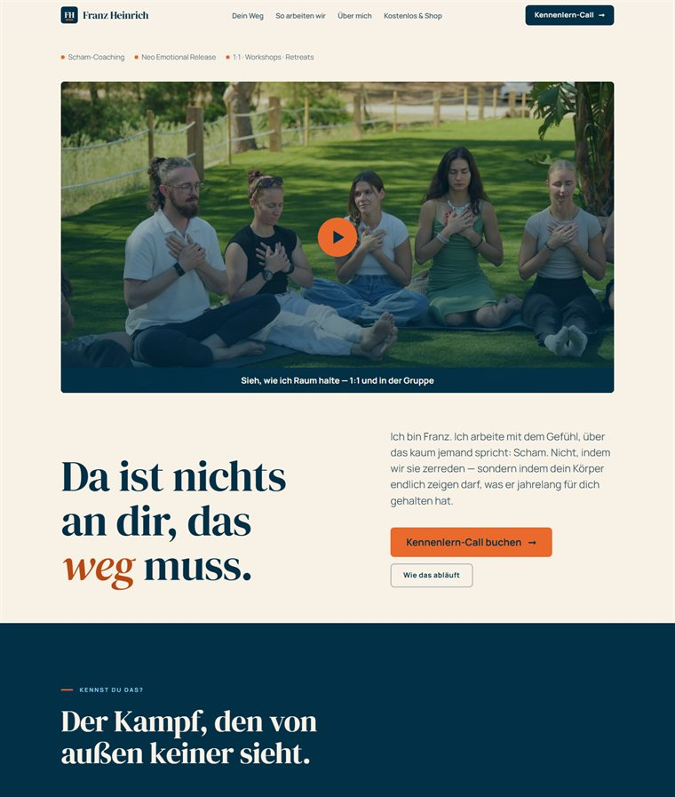
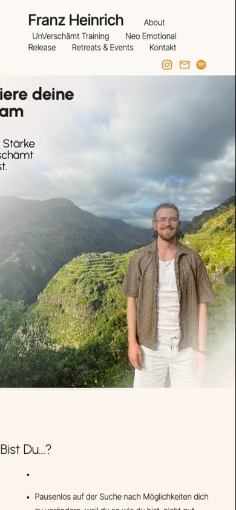
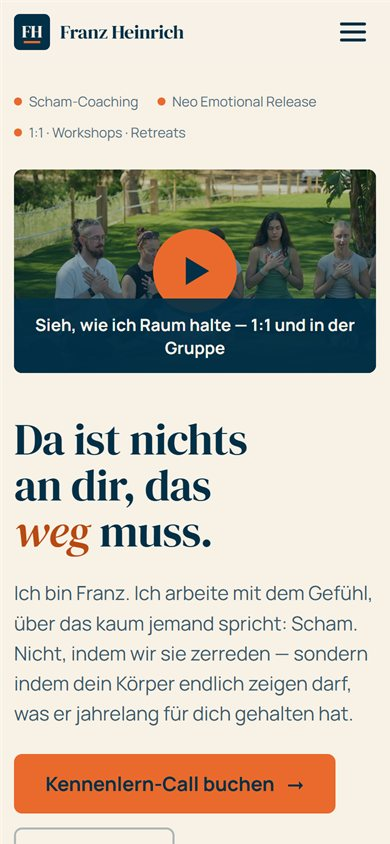

Franz, wir haben nochmal bei null angefangen.
Du hast im Call gesagt, dass viele dieser Seiten „einfach nach Klaus aussehen". Du hattest recht. Also haben wir den alten Entwurf nicht poliert, sondern weggeworfen. Was jetzt hier steht, kommt aus deinem Kopf: dein Brand Kit, deine Sprachnachricht, deine Fotos, dein Verkaufsprozess und die drei Seiten, die dir gefallen.
Was aus dem Gespräch in die Seite gewandert ist.
Dein Verkaufsprozess
Kennenlern-Call → Schnupper-Session → individuelle Begleitung. Genau so steht er jetzt als „Dein Weg mit mir" im Zentrum der Seite — nummeriert, mit einem Satz pro Schritt. Das „UnVerschämt Training" ist raus, wie besprochen.
Deine drei Vorbilder
Die nummerierte Journey von David Bedrick. Von Ashley Velvet Frost: alles auf der Startseite, dazu zwei Seiten mit echter Tiefe, und Bilder, die beim Scrollen auftauchen. Von Hannah: der Reiter „So kannst du mit mir arbeiten", ein „Kostenlos"-Bereich und das News-Banner ganz oben.
Dein Brand Kit
Navy, Warm Orange und Cream, dazu DM Serif Display und Manrope — genau so, wie du es geschickt hast. Die Seite erfindet keine eigene Optik, sie setzt deine um. Nur eine Sache haben wir angepasst: Orange ist bei kleiner Schrift schwer zu lesen, deshalb trägt es Flächen und Buttons, und der kleine Text bleibt Navy.
Deine Fotos
Aus deinem Drive: du am Strand mit der Sonne in der Hand, die Körperarbeit im Raum, der Kreis auf der Wiese, dein Lachen unterm Regenbogen. Zehn Bilder, alle von dir, keine Symbolbilder. Die alten Seiten-Fotos sind komplett raus.
Und Platz für ein Video
Du hattest gefragt, ob ganz oben ein Video geht. Der Platz dafür ist gebaut und sichtbar — uns fehlt nur noch eine web-taugliche Datei. Deine beiden Drive-Clips sind 21 und 62 MB im iPhone-Format; fürs Web brauchen wir eine MP4 mit rund 60–90 Sekunden.
Zieh den Griff nach links und rechts.
Links deine bisherige Seite, rechts der neue Entwurf. Beide Bilder zeigen denselben Ausschnitt am großen Bildschirm.


Bisher NeuDort entscheidet sich der erste Eindruck.
Auf deiner bisherigen Seite läuft die Überschrift am Smartphone aus dem Bild. Auf der neuen begrüßt dein Foto jeden Besucher, und darunter steht ein Satz, der ganz zu lesen ist.


Über 60 % aller Website-Besuche kommen heute vom Smartphone (StatCounter).
Und sie bleibt leicht — mit allen Fotos.
lädt beim ersten Bildschirm. Der Rest kommt erst, wenn du weiterscrollst.
die komplette Startseite mit allen acht Fotos — bisher waren es 2,2 MB.
Anfragen pro Aufruf, alle an deinen eigenen Server. Bisher: 31 an fünf Server, davon vier fremde.
Cookies, kein Tracking, keine Verbindung zu Google — deshalb auch kein Cookie-Banner.
Eigene Messung am 03.09.2026 (übertragene Dateigrößen und Anfragen). Die Lighthouse-Werte messen wir neu, sobald die Seite auf echtem Hosting liegt — der Vorgänger-Entwurf lag dort bei 100/100.
Sechs Punkte im direkten Vergleich.
| Bisher | Neu | |
|---|---|---|
| Seitengewicht | 2,2 MB | 0,7 MB — mit allen Fotos |
| Mobiltauglich | Nein — Überschrift abgeschnitten, Menü bricht | Ja — geprüft von 320 bis 1920 px |
| Server-Anfragen | 31 — an 5 Server, davon 4 fremde | 14 — alle an deinen eigenen |
| Inhalt | 4 von 6 Unterseiten waren Lorem-ipsum-Baustellen | Startseite plus zwei fertige Tiefen-Seiten, jede Zeile echt |
| Angebote | „UnVerschämt Training" als festes Paket | Dein echter Weg: Call → Session → Begleitung |
| Recht | Impressum leer, Datenschutzerklärung fehlt | Rechtsseiten vorbereitet, cookiefrei, Krisen-Hinweise drin |
Das haben wir gleich mitkorrigiert.
Alles ehrlich befundet, nichts dazuerfunden — und keine Panikmache, keine Rechtsberatung. Wir zeigen dir jeden Punkt gern am Schirm.
Dein Impressum war leer.
Auf /impressum stand bisher nur die Überschrift — keine Anschrift, keine
E-Mail, kein Name. Für eine geschäftliche Website schreibt § 5 DDG diese Angaben vor.
Auf der neuen Seite ist die Struktur fertig; es fehlen nur deine Daten.
Eine Datenschutzerklärung gab es nicht.
Der Footer-Text „Datenschutz" war gar kein Link — dein Kontaktformular verarbeitet aber persönliche Daten, und genau darüber muss eine Website informieren (Art. 13 DSGVO). Die neue Erklärung schreiben wir passgenau, sobald die Seite live geht.
Schriften kamen von Google-Servern.
Beim Aufruf deiner Seite wird die IP-Adresse jedes Besuchers an Google übertragen — das hat bereits Abmahnwellen ausgelöst (LG München I, 2022). Jetzt liegen alle Schriften auf deinem eigenen Hosting, es geht keine Verbindung zu Google, und ein Cookie-Banner braucht es nicht.
Erfundene Bewertungen aus dem Template.
Auf /coaching und /retreats standen englische Muster-Stimmen
(„Jenny Martins, Industrial Desiger"), dazu ein abgelaufener Countdown („You missed out!")
und „$50"-Angebote aus der Vorlage. Erfundene Kundenstimmen und Fake-Verknappung gelten
als irreführende Werbung (§ 5 UWG). Auf der neuen Seite steht an dieser Stelle ein
klar markierter Platzhalter, bis du echte Stimmen hast.
„Certified N.E.R. Therapist" ist jetzt „Practitioner".
„Therapeut" ist in Deutschland geschütztes Terrain und für Coaches rechtlich angreifbar. Deine eigene Impressums-Zeile sagt es übrigens genauso.
Dein Browser-Tab hatte keinen Titel.
Und Google keine Beschreibung deiner Seite. Jetzt: sauberer Titel, Beschreibung — und beim Teilen per WhatsApp erscheint eine Vorschau mit deinem Foto.
Und warum wir es so gebaut haben.
- Dein Brand Kit ist das Gesetz. Navy, Warm Orange, Cream, Warm Sand, Soft Blue — genau deine Werte, nichts dazuerfunden. Orange trägt die wichtigsten Buttons, Navy den Rest; kleiner Text bleibt immer Navy auf Cream, damit alles gut lesbar ist.
- DM Serif Display und Manrope, beide aus deinem Kit und beide auf deinem eigenen Hosting — es geht keine Anfrage an Google.
- Das Video steht ganz oben. Du wolltest keinen Text als Erstes, sondern sehen, wie du Raum hältst. Genau so ist es gebaut: Video zuerst, Aussage darunter. Ein zweiter Video-Platz sitzt bei „Über mich" für deine fünf Minuten über dich.
- Dein Weg als Herzstück. Drei nummerierte Schritte statt Paket-Kacheln. Wer oben einsteigt, weiß nach zwanzig Sekunden, wie eine Zusammenarbeit mit dir anfängt.
- Bilder tauchen auf. Genau der Effekt, den du an Ashleys Sessions-Seite magst — Bild und Text kommen leicht versetzt herein, nicht gleichzeitig. Wer „reduzierte Bewegung" eingestellt hat, bekommt alles ruhig.
- Kostenlos & Shop in einem Bereich. Podcast, Instagram und das kleine Scham-Handbuch als Newsletter-Geschenk; darunter drei Karten für Morgen-Ritual, Meditations-Workshop und Self-Study. Bezahlt wird später bei deinem Anbieter, wir tragen nur den Link ein.
- Deine eigene Link-Seite statt Wonderlink oder Linktree: franzheinrich.com/links. Sieht aus wie deine Marke, kostet nichts und schickt alle Klicks auf deine eigene Domain.
- Ein Zeichen aus deinen Initialen. FH in Navy und Orange — als Logo im Menü und als Symbol im Browser-Tab. Genau das, was du vorgeschlagen hast; ein grosses Logo-Projekt braucht es dafür nicht.
- Gegen den Bot-Spam. Deine E-Mail-Adresse steht nicht mehr im Quelltext, sondern wird erst im Browser zusammengesetzt. Adress-Sammler laufen ins Leere, Menschen sehen sie ganz normal.
- Auch AGB sind vorbereitet, nicht nur Impressum und Datenschutz — du hattest sie ausdrücklich angefragt.
- Zwei Seiten mit Tiefe. Sessions erklärt Schritt für Schritt, was in einer Session passiert, inklusive „ist was für dich, wenn …" und „nichts für dich, wenn …". Einzelbegleitung beschreibt den längeren Weg — bewusst ohne Preisliste, weil du das im Call klärst.
- Verantwortung eingebaut. Ehrliche „Für wen nicht"-Box, Krisen-Hinweis mit Telefonseelsorge und der klare Satz, dass Coaching keine Psychotherapie ersetzt.
- Änderbar per Sprachnachricht. Die Seite ist in klar benannte Blöcke gegliedert, damit Klaus deine Änderungen sauber trifft.
Damit daraus deine Seite wird.
Alles, was jetzt drinsteht, ist ein Vorschlag. Du wolltest die Texte selbst schreiben — überschreib uns gnadenlos.
- Deine Texte. Jede Stelle ist einzeln austauschbar. Schick sie, wie es dir passt: Sprachnachricht, Notizen, Stichpunkte.
- Zwei Videos als MP4, je rund 60–90 Sekunden: das Intro ganz oben und deine fünf Minuten bei „Über mich". Beide Plätze warten. Deine zwei Drive-Clips sind iPhone-Aufnahmen mit 21 und 62 MB und im Browser nicht abspielbar — die müssen wir umwandeln oder du schneidest gleich eine Web-Fassung.
- Der Preis der Schnupper-Session — sie ist bezahlt, steht aber gerade ohne Zahl da. Nennen oder bewusst offen lassen?
- Deine Orte. München und Regensburg stehen noch von der alten Seite drin. Stimmt das, jetzt wo du im Winter in Koh Phangan bist?
- Echte Stimmen von Menschen, die mit dir gearbeitet haben — plus deren Okay.
- Termine und Links für Workshops, Retreats und deinen Shop — plus die Preise für Morgen-Ritual, Meditations-Workshop und Self-Study.
- Dein Kalender-Link (Calendly, Google-Terminplaner …) und deine WhatsApp-Nummer. Solange die fehlen, führen beide Buttons zum Formular.
- Der Newsletter-Anbieter — und das kleine Scham-Handbuch als PDF, das Menschen dafür bekommen.
- Deine Google-Rezensionen. Die lassen sich einbinden; weil dabei aber Daten zu Google fliessen, klären wir vorher, ob wir sie live laden oder regelmässig abholen und selbst anzeigen. Cookiefrei bleibt die Seite in beiden Fällen.
- Wer hat die Fotos gemacht? Bei Profi-Shootings liegt das Nutzungsrecht oft beim Fotografen — das klären wir, bevor die Seite offiziell live geht.
- Impressums-Angaben — Anschrift, E-Mail, Telefon, USt-Status. Ohne sie bleibt die Seite für Google gesperrt.
- Der Flyer zur Einzelbegleitung, den du angeboten hattest.
Schau sie dir in Ruhe an.
Danach telefonieren wir und gehen zusammen durch, was bleibt, was fliegt und was noch fehlt. Wie besprochen: Die Rechnung kommt erst, wenn der Entwurf steht und du damit zufrieden bist.
Deine neue Seite ansehenLenny & Michael · Lechcode, Landsberg am Lech